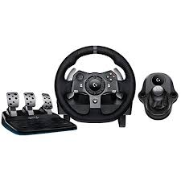
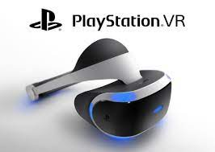
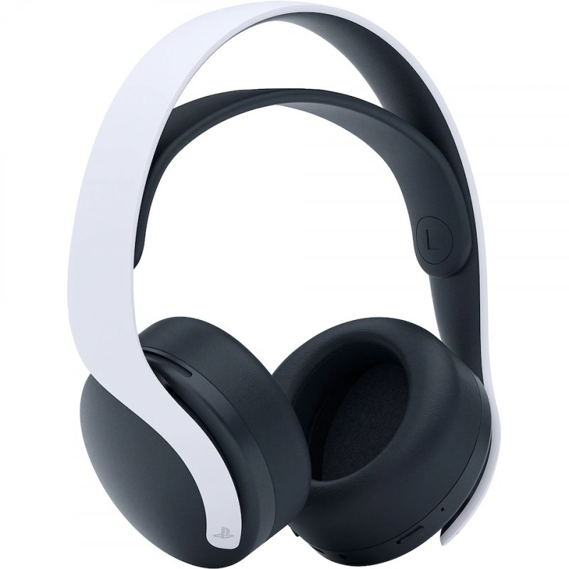

A vásárlás nem igazi, csak szimuláció célból van
PlayStation 5 tartozékai
Logitech G Driving Force

Az átélhető autóvezetés-szimulációt a részletek keltik életre.
A kétmotoros műterhelésnek köszönhetően a kerék minden megcsúszása és a terep minden változása érezhető.
A kormánytengely erős acél golyóscsapágyai tömeget és tartósságot kölcsönöznek a terméknek.
A kormányra szerelt rozsdamentes acél váltókarok és a pedálok közvetítik pontosan az erőt.
A kézzel varrott bőrborítású kormánykerék minden autót luxusautóvá varázsol.
A ferde fogazású fogaskerekek zökkenőmentes, halk működést tesznek lehetővé.
Állitható pedálok:
A gáz-, fék- és tengelykapcsoló-pedált tartalmazó különálló pedálegység révén még valósághűbb vezetési testhelyzetet vehet fel.
A Driving Force használatával kényelmesen gyorsíthat, fékezhet és válthat sebességet – mintha egy valódi autóban ülne.
A legteljesebb versenyélmény érdekében használjon külön sebességváltót.
A rövid kapcsolási út, 6 fokozatú, H elrendezésű váltóval (amelynél a hátramenet lenyomva kapcsolható), a Logitech G Driving Force váltó olyan társ a vezetésben, amelyet nem fog egyhamar elfelejteni.
PlayStationVR

Tulajdonképpen a válasz a nevében is van: a Sony virtuális valóság készüléke, egy headset, amit a PS-el együtt használhatsz, és a játékokat – természetesen csak azokat, amiket így készítettek el – egy virtuális térben játszhatod.
Igazán nagy élmény, hiszen szó szerint a játékban találhatod magad. Ahogy mozgatod a fejed, úgy nézel körbe a virtuális világban, míg a kontrollerrel a karaktert irányíthatod.
Lehet tévé nélkül használni a PSVR-t?
Igen, hisz a legtöbb játék nem igényli a tévét (igazából eddig csak kettőt találtunk, melynek játékmenete megköveteli a második képernyőt, az egyik a Keep Talking and Nobody Explodes, a másik pedig a The Playroom VR egyik-másik minijátéka), és technikailag nincs is rá szükség. Nem kell bekapcsolni, sőt, nem is kell a rendszerre rádugni egy extra képernyőt, ha ezentúl csak és kizárólag VR-ben szeretnél játszani (ezt amúgy nem tudjuk ajánlani). Nemcsak a VR-játékok, de minden alkalmazás és játék elindul és játszható a szemüvegen keresztül is.
Miért van szükség kamerára a PSVR-hoz?
Bár a szemüvegben van giroszkóp és gyorsulásmérő is, a pontosabb mozgásérzékelés végett a szemüvegen levő – igen futurisztikus – kék fényeket figyeli a kamera. Szintén a kamera figyeli a kontrollerek (akár DualShock, akár Move) fényeit.
PLAYSTATION PULSE 3D FEJHALLGATÓ

A kifinomult kialakítású PULSE 3D vezeték nélküli headset kettős zajszűrő mikrofonnal, beépített újratölthető akkumulátorral és könnyen elérhető vezérlők egész tárházával rendelkezik.
Egy új generáció számára teremtve:
3D hangzásra finomhangolva a PS5 konzolokon
Élvezd a játék kényelmét, amelyet a kifinomult fülpárnák és a fejpánt szíja biztosítanak
Játssz stílusosan a PS5 konzolhoz jól illeszkedő, kifinomult kialakításnak köszönhetően. Játékosokra tervezve
Csevegj barátaiddal a beépített zajszűrő mikrofonokon keresztül
A hang és a csevegés beállításait gyorsan módosíthatod a könnyen elérhető vezérlők segítségével
Élvezd akár 12 órán át a vezeték nélküli játékot a beépített újratölthető akkumulátornak köszönhetően
A vezeték nélküli adapterrel könnyen csatlakoztathatod PS5 vagy PS4 konzolodhoz
Csatlakoztasd PS VR-hez vagy mobileszközökhöz a csomagban található audiokábellel
Játék közben módosíthatod beállításaidat a beépített mikrofon elnémításától, a fő hangerőszabályozótól és a játékbeli hangzás szabályozásától kezdve a csevegés közbeni hangkeverésig tartó funkciókkal. Az ezt a célt szolgáló mikrofonfigyelő gombbal könnyen ellenőrizheted, hogyan hallanak a csapattársaid.
PS5 HD kamera


1080p felbontású képkockák
Készíts egyenletes, éles felvételt magadról full HD minőségben a kamera kettős, nagy látószögű objektívjével, és rögzítsd a játék legepikusabb pillanatait. Indíts felvételt vagy közvetítést magadról játék közben a DualSense vezeték nélküli vezérlő létrehozás gombjával1.
Beépített állvány
Készítsd el a tökéletes felvételt a HD-kamera beépített, állítható állványának segítségével. Kompakt kialakítása lehetővé teszi, hogy stabilan rögzítsd TV-d fölött vagy alatt – ahol aztán igény szerint elvégezheted a látószög finomhangolását.
Háttér-eltávolító eszközök
Legyél alkotásaid középpontjában a PlayStation®5 konzol beépített háttér-eltávolító eszközeinek köszönhetően.
A HD-kamera segítségével megjelenítheted magad a játékvideóidban a közvetítés során1 „kép a képben” módban, a háttér kivágásával vagy teljes, zöld képernyős helyettesítésével.
SONY PLAYSTATION PS5 MEDIA REMOTE

Fedezd fel a szórakozás világát a Sony PlayStation 5 (PS5) Media Remote-tal. Az irányítón minden megtalálható, ami egy tökéletes media vezérlőhöz kell. Találhatóak rajta dedikált gombok, mint a Disney+, Netflix, YouTube… Így kedvenceidhez elég egy gombnyomás és már ott is vagy. A funkció akkor is működik, mikor a konzol ki van kapcsolva. A filmek lejátszásához is használható. A távirányítóval bármikor elindíthatod kedvenc filmed, de meg is állíthatod a filmet vagy előre, esetleg hátra tekerhetsz benne. Nem csak media alkalmazásokat tudsz vele vezérelni, a PS5 menüjében is könnyedén navigálhatsz vele, nincs szükség a kontrollerre. Egyes TV-khez kompatibilis, ezáltal irányíthatod a hangerejét és energia beállítását.
Használj egyetlen irányítót a PS5 menüjéhez és a különféle media alkalmazásokhoz a Sony PlayStation 5 (PS5) Media Remote-ot!
Dedikált alkalmazás gombok: Disney+, Netflix, YouTube, Spotify
Media lejátszáshoz vezérlők: indítás, szünet, előre és hátra tekerés
Könnyű navigáció a PS5 menüjében
Kompatibilis egyes TV-khez